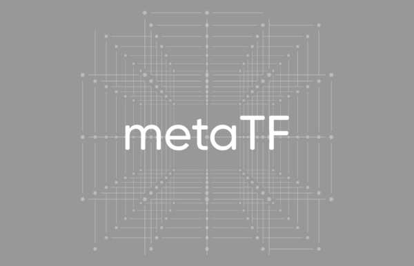
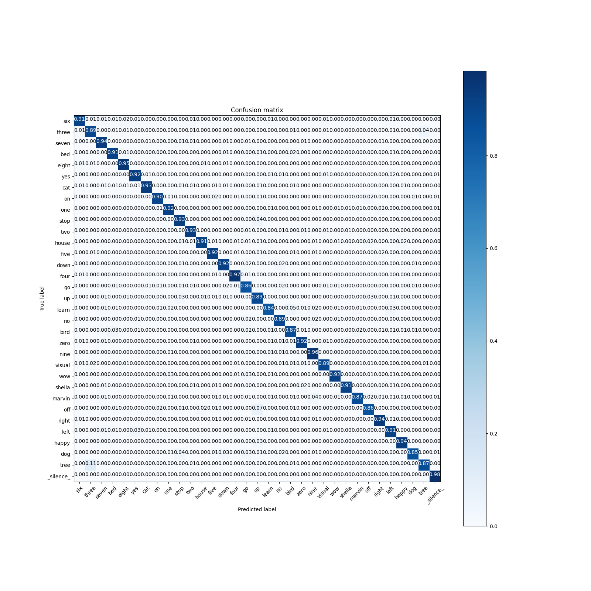

<!DOCTYPE html>
<html class="writer-html5" lang="en" data-content_root="../../">
<head>
  <meta charset="utf-8" /><meta name="viewport" content="width=device-width, initial-scale=1" />

  <meta name="viewport" content="width=device-width, initial-scale=1.0" />
  <title>DS-CNN/KWS inference &mdash; Akida Examples  documentation</title>
      <link rel="stylesheet" type="text/css" href="../../_static/pygments.css?v=b86133f3" />
      <link rel="stylesheet" type="text/css" href="../../_static/css/theme.css?v=e59714d7" />
      <link rel="stylesheet" type="text/css" href="../../_static/sg_gallery.css?v=d2d258e8" />
      <link rel="stylesheet" type="text/css" href="../../_static/sg_gallery-binder.css?v=f4aeca0c" />
      <link rel="stylesheet" type="text/css" href="../../_static/sg_gallery-dataframe.css?v=2082cf3c" />
      <link rel="stylesheet" type="text/css" href="../../_static/sg_gallery-rendered-html.css?v=1277b6f3" />
      <link rel="stylesheet" type="text/css" href="../../_static/sphinx-design.min.css?v=95c83b7e" />
      <link rel="stylesheet" type="text/css" href="../../_static/custom.css?v=c4c4e161" />

  
    <link rel="shortcut icon" href="../../_static/favicon.ico"/>
      <script src="../../_static/jquery.js?v=5d32c60e"></script>
      <script src="../../_static/_sphinx_javascript_frameworks_compat.js?v=2cd50e6c"></script>
      <script src="../../_static/documentation_options.js?v=5929fcd5"></script>
      <script src="../../_static/doctools.js?v=9bcbadda"></script>
      <script src="../../_static/sphinx_highlight.js?v=dc90522c"></script>
      <script src="../../_static/design-tabs.js?v=f930bc37"></script>
      <script src="../../_static/leadlander_tag.js?v=d65c0df8"></script>
    <script src="../../_static/js/theme.js"></script>
    <link rel="index" title="Index" href="../../genindex.html" />
    <link rel="search" title="Search" href="../../search.html" />
    <link rel="next" title="Age estimation (regression) example" href="plot_3_regression.html" />
    <link rel="prev" title="AkidaNet/ImageNet inference" href="plot_1_akidanet_imagenet.html" /> 
</head>

<body class="wy-body-for-nav"> 
  <div class="wy-grid-for-nav">
    <nav data-toggle="wy-nav-shift" class="wy-nav-side">
      <div class="wy-side-scroll">
        <div class="wy-side-nav-search"  style="background: #000000" >

          
          
          <a href="../../index.html">
            
              
          </a>
<div role="search">
  <form id="rtd-search-form" class="wy-form" action="../../search.html" method="get">
    <input type="text" name="q" placeholder="Search docs" aria-label="Search docs" />
    <input type="hidden" name="check_keywords" value="yes" />
    <input type="hidden" name="area" value="default" />
  </form>
</div>
        </div><div class="wy-menu wy-menu-vertical" data-spy="affix" role="navigation" aria-label="Navigation menu">
              <ul class="current">
<li class="toctree-l1"><a class="reference internal" href="../../index.html">Overview</a></li>
<li class="toctree-l1"><a class="reference internal" href="../../installation.html">Installation</a><ul>
<li class="toctree-l2"><a class="reference internal" href="../../installation.html#supported-configurations">Supported configurations</a></li>
<li class="toctree-l2"><a class="reference internal" href="../../installation.html#quick-installation">Quick installation</a></li>
<li class="toctree-l2"><a class="reference internal" href="../../installation.html#running-examples">Running examples</a></li>
</ul>
</li>
<li class="toctree-l1"><a class="reference internal" href="../../user_guide/user_guide.html">User guide</a><ul>
<li class="toctree-l2"><a class="reference internal" href="../../user_guide/akida.html">Akida user guide</a><ul>
<li class="toctree-l3"><a class="reference internal" href="../../user_guide/akida.html#overview">Overview</a></li>
<li class="toctree-l3"><a class="reference internal" href="../../user_guide/akida.html#programming-interface">Programming interface</a><ul>
<li class="toctree-l4"><a class="reference internal" href="../../user_guide/akida.html#the-akida-model">The Akida Model</a></li>
<li class="toctree-l4"><a class="reference internal" href="../../user_guide/akida.html#akida-layers">Akida layers</a></li>
</ul>
</li>
<li class="toctree-l3"><a class="reference internal" href="../../user_guide/akida.html#model-hardware-mapping">Model Hardware Mapping</a><ul>
<li class="toctree-l4"><a class="reference internal" href="../../user_guide/akida.html#devices">Devices</a></li>
<li class="toctree-l4"><a class="reference internal" href="../../user_guide/akida.html#model-mapping">Model mapping</a></li>
<li class="toctree-l4"><a class="reference internal" href="../../user_guide/akida.html#advanced-mapping-details-and-hardware-devices-usage">Advanced Mapping Details and Hardware Devices Usage</a></li>
<li class="toctree-l4"><a class="reference internal" href="../../user_guide/akida.html#performance-measurement">Performance measurement</a></li>
<li class="toctree-l4"><a class="reference internal" href="../../user_guide/akida.html#command-line-interface-for-model-evaluation">Command-line interface for model evaluation</a></li>
</ul>
</li>
<li class="toctree-l3"><a class="reference internal" href="../../user_guide/akida.html#using-akida-edge-learning">Using Akida Edge learning</a><ul>
<li class="toctree-l4"><a class="reference internal" href="../../user_guide/akida.html#learning-constraints">Learning constraints</a></li>
<li class="toctree-l4"><a class="reference internal" href="../../user_guide/akida.html#compiling-a-layer">Compiling a layer</a></li>
</ul>
</li>
</ul>
</li>
<li class="toctree-l2"><a class="reference internal" href="../../user_guide/quantizeml.html">QuantizeML toolkit</a><ul>
<li class="toctree-l3"><a class="reference internal" href="../../user_guide/quantizeml.html#overview">Overview</a></li>
<li class="toctree-l3"><a class="reference internal" href="../../user_guide/quantizeml.html#the-fixedpoint-representation">The FixedPoint representation</a></li>
<li class="toctree-l3"><a class="reference internal" href="../../user_guide/quantizeml.html#quantization-flow">Quantization flow</a><ul>
<li class="toctree-l4"><a class="reference internal" href="../../user_guide/quantizeml.html#compatibility-constraints">Compatibility constraints</a></li>
<li class="toctree-l4"><a class="reference internal" href="../../user_guide/quantizeml.html#model-loading">Model loading</a></li>
</ul>
</li>
<li class="toctree-l3"><a class="reference internal" href="../../user_guide/quantizeml.html#command-line-interface">Command line interface</a><ul>
<li class="toctree-l4"><a class="reference internal" href="../../user_guide/quantizeml.html#quantize-cli">quantize CLI</a></li>
<li class="toctree-l4"><a class="reference internal" href="../../user_guide/quantizeml.html#config-cli">config CLI</a></li>
<li class="toctree-l4"><a class="reference internal" href="../../user_guide/quantizeml.html#check-cli">check CLI</a></li>
<li class="toctree-l4"><a class="reference internal" href="../../user_guide/quantizeml.html#insert-rescaling-cli">insert_rescaling CLI</a></li>
</ul>
</li>
<li class="toctree-l3"><a class="reference internal" href="../../user_guide/quantizeml.html#supported-layer-types">Supported layer types</a><ul>
<li class="toctree-l4"><a class="reference internal" href="../../user_guide/quantizeml.html#keras-support">Keras support</a></li>
<li class="toctree-l4"><a class="reference internal" href="../../user_guide/quantizeml.html#onnx-support">ONNX support</a></li>
</ul>
</li>
<li class="toctree-l3"><a class="reference internal" href="../../user_guide/quantizeml.html#analysis-module">Analysis module</a><ul>
<li class="toctree-l4"><a class="reference internal" href="../../user_guide/quantizeml.html#kernel-distribution">Kernel distribution</a></li>
<li class="toctree-l4"><a class="reference internal" href="../../user_guide/quantizeml.html#quantization-error">Quantization error</a></li>
<li class="toctree-l4"><a class="reference internal" href="../../user_guide/quantizeml.html#metrics">Metrics</a></li>
<li class="toctree-l4"><a class="reference internal" href="../../user_guide/quantizeml.html#command-line">Command line</a></li>
</ul>
</li>
</ul>
</li>
<li class="toctree-l2"><a class="reference internal" href="../../user_guide/cnn2snn.html">CNN2SNN toolkit</a><ul>
<li class="toctree-l3"><a class="reference internal" href="../../user_guide/cnn2snn.html#overview">Overview</a></li>
<li class="toctree-l3"><a class="reference internal" href="../../user_guide/cnn2snn.html#conversion-flow">Conversion flow</a><ul>
<li class="toctree-l4"><a class="reference internal" href="../../user_guide/cnn2snn.html#conversion-compatibility">Conversion compatibility</a></li>
<li class="toctree-l4"><a class="reference internal" href="../../user_guide/cnn2snn.html#command-line-interface">Command-line interface</a></li>
</ul>
</li>
<li class="toctree-l3"><a class="reference internal" href="../../user_guide/cnn2snn.html#handling-akida-1-0-and-akida-2-0-specificities">Handling Akida 1.0 and Akida 2.0 specificities</a></li>
</ul>
</li>
<li class="toctree-l2"><a class="reference internal" href="../../user_guide/akida_models.html">Akida models zoo</a><ul>
<li class="toctree-l3"><a class="reference internal" href="../../user_guide/akida_models.html#overview">Overview</a></li>
<li class="toctree-l3"><a class="reference internal" href="../../user_guide/akida_models.html#command-line-interface-for-model-creation">Command-line interface for model creation</a></li>
<li class="toctree-l3"><a class="reference internal" href="../../user_guide/akida_models.html#command-line-interface-for-model-training">Command-line interface for model training</a><ul>
<li class="toctree-l4"><a class="reference internal" href="../../user_guide/akida_models.html#kws-training">KWS training</a></li>
<li class="toctree-l4"><a class="reference internal" href="../../user_guide/akida_models.html#akidanet-training">AkidaNet training</a></li>
</ul>
</li>
<li class="toctree-l3"><a class="reference internal" href="../../user_guide/akida_models.html#command-line-interface-for-model-evaluation">Command-line interface for model evaluation</a></li>
<li class="toctree-l3"><a class="reference internal" href="../../user_guide/akida_models.html#command-line-interface-to-display-summary">Command-line interface to display summary</a></li>
<li class="toctree-l3"><a class="reference internal" href="../../user_guide/akida_models.html#command-line-interface-to-display-sparsity">Command-line interface to display sparsity</a></li>
<li class="toctree-l3"><a class="reference internal" href="../../user_guide/akida_models.html#id1">Layer Blocks</a></li>
<li class="toctree-l3"><a class="reference internal" href="../../user_guide/akida_models.html#handling-akida-1-0-and-akida-2-0-specificities">Handling Akida 1.0 and Akida 2.0 specificities</a></li>
</ul>
</li>
<li class="toctree-l2"><a class="reference internal" href="../../user_guide/engine.html">Akida Engine</a><ul>
<li class="toctree-l3"><a class="reference internal" href="../../user_guide/engine.html#overview">Overview</a></li>
<li class="toctree-l3"><a class="reference internal" href="../../user_guide/engine.html#engine-directory-structure">Engine directory structure</a></li>
<li class="toctree-l3"><a class="reference internal" href="../../user_guide/engine.html#engine-api-overview">Engine API overview</a><ul>
<li class="toctree-l4"><a class="reference internal" href="../../user_guide/engine.html#hardwaredriver">HardwareDriver</a></li>
<li class="toctree-l4"><a class="reference internal" href="../../user_guide/engine.html#hardwaredevice">HardwareDevice</a></li>
<li class="toctree-l4"><a class="reference internal" href="../../user_guide/engine.html#dense">Dense</a></li>
<li class="toctree-l4"><a class="reference internal" href="../../user_guide/engine.html#shape">Shape</a></li>
<li class="toctree-l4"><a class="reference internal" href="../../user_guide/engine.html#hwversion">HwVersion</a></li>
<li class="toctree-l4"><a class="reference internal" href="../../user_guide/engine.html#sparse-and-input-conversion-functions">Sparse and Input conversion functions</a></li>
<li class="toctree-l4"><a class="reference internal" href="../../user_guide/engine.html#other-headers-in-the-api">Other headers in the API</a></li>
</ul>
</li>
</ul>
</li>
<li class="toctree-l2"><a class="reference internal" href="../../user_guide/user_guide.html#akida-hw-capabilities">Akida HW capabilities</a><ul>
<li class="toctree-l3"><a class="reference internal" href="../../user_guide/hardware/1.0.html">Akida 1.0 capabilities</a></li>
<li class="toctree-l3"><a class="reference internal" href="../../user_guide/hardware/2.0.html">Akida 2.0 capabilities</a></li>
</ul>
</li>
</ul>
</li>
<li class="toctree-l1"><a class="reference internal" href="../../api_reference/api_reference.html">API reference</a><ul>
<li class="toctree-l2"><a class="reference internal" href="../../api_reference/akida_apis.html">Akida runtime</a><ul>
<li class="toctree-l3"><a class="reference internal" href="../../api_reference/akida_apis.html#akida.__version__"><code class="docutils literal notranslate"><span class="pre">__version__</span></code></a></li>
<li class="toctree-l3"><a class="reference internal" href="../../api_reference/akida_apis.html#model">Model</a><ul>
<li class="toctree-l4"><a class="reference internal" href="../../api_reference/akida_apis.html#akida.Model"><code class="docutils literal notranslate"><span class="pre">Model</span></code></a></li>
</ul>
</li>
<li class="toctree-l3"><a class="reference internal" href="../../api_reference/akida_apis.html#akida-layers">Akida layers</a><ul>
<li class="toctree-l4"><a class="reference internal" href="../../api_reference/akida_apis.html#layer-api">Layer API</a></li>
<li class="toctree-l4"><a class="reference internal" href="../../api_reference/akida_apis.html#common-layer">Common layer</a></li>
<li class="toctree-l4"><a class="reference internal" href="../../api_reference/akida_apis.html#akida-v1-layers">Akida V1 layers</a></li>
<li class="toctree-l4"><a class="reference internal" href="../../api_reference/akida_apis.html#akida-v2-layers">Akida V2 layers</a></li>
</ul>
</li>
<li class="toctree-l3"><a class="reference internal" href="../../api_reference/akida_apis.html#layer-parameters">Layer parameters</a><ul>
<li class="toctree-l4"><a class="reference internal" href="../../api_reference/akida_apis.html#layertype">LayerType</a></li>
<li class="toctree-l4"><a class="reference internal" href="../../api_reference/akida_apis.html#activationtype">ActivationType</a></li>
<li class="toctree-l4"><a class="reference internal" href="../../api_reference/akida_apis.html#padding">Padding</a></li>
<li class="toctree-l4"><a class="reference internal" href="../../api_reference/akida_apis.html#pooltype">PoolType</a></li>
</ul>
</li>
<li class="toctree-l3"><a class="reference internal" href="../../api_reference/akida_apis.html#optimizers">Optimizers</a><ul>
<li class="toctree-l4"><a class="reference internal" href="../../api_reference/akida_apis.html#akida.core.Optimizer"><code class="docutils literal notranslate"><span class="pre">Optimizer</span></code></a></li>
<li class="toctree-l4"><a class="reference internal" href="../../api_reference/akida_apis.html#akida.AkidaUnsupervised"><code class="docutils literal notranslate"><span class="pre">AkidaUnsupervised</span></code></a></li>
</ul>
</li>
<li class="toctree-l3"><a class="reference internal" href="../../api_reference/akida_apis.html#sequence">Sequence</a><ul>
<li class="toctree-l4"><a class="reference internal" href="../../api_reference/akida_apis.html#id1">Sequence</a></li>
<li class="toctree-l4"><a class="reference internal" href="../../api_reference/akida_apis.html#backendtype">BackendType</a></li>
<li class="toctree-l4"><a class="reference internal" href="../../api_reference/akida_apis.html#pass">Pass</a></li>
</ul>
</li>
<li class="toctree-l3"><a class="reference internal" href="../../api_reference/akida_apis.html#device">Device</a><ul>
<li class="toctree-l4"><a class="reference internal" href="../../api_reference/akida_apis.html#id2">Device</a></li>
<li class="toctree-l4"><a class="reference internal" href="../../api_reference/akida_apis.html#hwversion">HwVersion</a></li>
</ul>
</li>
<li class="toctree-l3"><a class="reference internal" href="../../api_reference/akida_apis.html#hwdevice">HWDevice</a><ul>
<li class="toctree-l4"><a class="reference internal" href="../../api_reference/akida_apis.html#id3">HWDevice</a></li>
<li class="toctree-l4"><a class="reference internal" href="../../api_reference/akida_apis.html#socdriver">SocDriver</a></li>
<li class="toctree-l4"><a class="reference internal" href="../../api_reference/akida_apis.html#clockmode">ClockMode</a></li>
</ul>
</li>
<li class="toctree-l3"><a class="reference internal" href="../../api_reference/akida_apis.html#powermeter">PowerMeter</a><ul>
<li class="toctree-l4"><a class="reference internal" href="../../api_reference/akida_apis.html#akida.PowerMeter"><code class="docutils literal notranslate"><span class="pre">PowerMeter</span></code></a></li>
<li class="toctree-l4"><a class="reference internal" href="../../api_reference/akida_apis.html#akida.PowerEvent"><code class="docutils literal notranslate"><span class="pre">PowerEvent</span></code></a></li>
</ul>
</li>
<li class="toctree-l3"><a class="reference internal" href="../../api_reference/akida_apis.html#np">NP</a><ul>
<li class="toctree-l4"><a class="reference internal" href="../../api_reference/akida_apis.html#akida.NP.Mesh"><code class="docutils literal notranslate"><span class="pre">Mesh</span></code></a></li>
<li class="toctree-l4"><a class="reference internal" href="../../api_reference/akida_apis.html#akida.NP.Info"><code class="docutils literal notranslate"><span class="pre">Info</span></code></a></li>
<li class="toctree-l4"><a class="reference internal" href="../../api_reference/akida_apis.html#akida.NP.Ident"><code class="docutils literal notranslate"><span class="pre">Ident</span></code></a></li>
<li class="toctree-l4"><a class="reference internal" href="../../api_reference/akida_apis.html#akida.NP.NpSpace"><code class="docutils literal notranslate"><span class="pre">NpSpace</span></code></a></li>
<li class="toctree-l4"><a class="reference internal" href="../../api_reference/akida_apis.html#akida.NP.Type"><code class="docutils literal notranslate"><span class="pre">Type</span></code></a></li>
<li class="toctree-l4"><a class="reference internal" href="../../api_reference/akida_apis.html#akida.NP.MemoryInfo"><code class="docutils literal notranslate"><span class="pre">MemoryInfo</span></code></a></li>
<li class="toctree-l4"><a class="reference internal" href="../../api_reference/akida_apis.html#akida.NP.Component"><code class="docutils literal notranslate"><span class="pre">Component</span></code></a></li>
<li class="toctree-l4"><a class="reference internal" href="../../api_reference/akida_apis.html#akida.NP.SramSize"><code class="docutils literal notranslate"><span class="pre">SramSize</span></code></a></li>
</ul>
</li>
<li class="toctree-l3"><a class="reference internal" href="../../api_reference/akida_apis.html#mapping">Mapping</a><ul>
<li class="toctree-l4"><a class="reference internal" href="../../api_reference/akida_apis.html#akida.MapMode"><code class="docutils literal notranslate"><span class="pre">MapMode</span></code></a></li>
<li class="toctree-l4"><a class="reference internal" href="../../api_reference/akida_apis.html#akida.MapConstraints"><code class="docutils literal notranslate"><span class="pre">MapConstraints</span></code></a></li>
</ul>
</li>
</ul>
</li>
<li class="toctree-l2"><a class="reference internal" href="../../api_reference/cnn2snn_apis.html">CNN2SNN</a><ul>
<li class="toctree-l3"><a class="reference internal" href="../../api_reference/cnn2snn_apis.html#akida-version">Akida version</a><ul>
<li class="toctree-l4"><a class="reference internal" href="../../api_reference/cnn2snn_apis.html#cnn2snn.AkidaVersion"><code class="docutils literal notranslate"><span class="pre">AkidaVersion</span></code></a></li>
<li class="toctree-l4"><a class="reference internal" href="../../api_reference/cnn2snn_apis.html#cnn2snn.get_akida_version"><code class="docutils literal notranslate"><span class="pre">get_akida_version()</span></code></a></li>
<li class="toctree-l4"><a class="reference internal" href="../../api_reference/cnn2snn_apis.html#cnn2snn.set_akida_version"><code class="docutils literal notranslate"><span class="pre">set_akida_version()</span></code></a></li>
</ul>
</li>
<li class="toctree-l3"><a class="reference internal" href="../../api_reference/cnn2snn_apis.html#conversion">Conversion</a><ul>
<li class="toctree-l4"><a class="reference internal" href="../../api_reference/cnn2snn_apis.html#cnn2snn.convert"><code class="docutils literal notranslate"><span class="pre">convert()</span></code></a></li>
<li class="toctree-l4"><a class="reference internal" href="../../api_reference/cnn2snn_apis.html#cnn2snn.check_model_compatibility"><code class="docutils literal notranslate"><span class="pre">check_model_compatibility()</span></code></a></li>
</ul>
</li>
</ul>
</li>
<li class="toctree-l2"><a class="reference internal" href="../../api_reference/quantizeml_apis.html">QuantizeML</a><ul>
<li class="toctree-l3"><a class="reference internal" href="../../api_reference/quantizeml_apis.html#layers">Layers</a><ul>
<li class="toctree-l4"><a class="reference internal" href="../../api_reference/quantizeml_apis.html#reshaping">Reshaping</a></li>
<li class="toctree-l4"><a class="reference internal" href="../../api_reference/quantizeml_apis.html#activations">Activations</a></li>
<li class="toctree-l4"><a class="reference internal" href="../../api_reference/quantizeml_apis.html#convolution">Convolution</a></li>
<li class="toctree-l4"><a class="reference internal" href="../../api_reference/quantizeml_apis.html#depthwise-convolution">Depthwise convolution</a></li>
<li class="toctree-l4"><a class="reference internal" href="../../api_reference/quantizeml_apis.html#separable-convolution">Separable convolution</a></li>
<li class="toctree-l4"><a class="reference internal" href="../../api_reference/quantizeml_apis.html#temporal-convolution">Temporal convolution</a></li>
<li class="toctree-l4"><a class="reference internal" href="../../api_reference/quantizeml_apis.html#dense">Dense</a></li>
<li class="toctree-l4"><a class="reference internal" href="../../api_reference/quantizeml_apis.html#skip-connection">Skip connection</a></li>
<li class="toctree-l4"><a class="reference internal" href="../../api_reference/quantizeml_apis.html#pooling">Pooling</a></li>
<li class="toctree-l4"><a class="reference internal" href="../../api_reference/quantizeml_apis.html#rescaling">Rescaling</a></li>
<li class="toctree-l4"><a class="reference internal" href="../../api_reference/quantizeml_apis.html#dropout">Dropout</a></li>
<li class="toctree-l4"><a class="reference internal" href="../../api_reference/quantizeml_apis.html#quantizers">Quantizers</a></li>
<li class="toctree-l4"><a class="reference internal" href="../../api_reference/quantizeml_apis.html#calibration">Calibration</a></li>
<li class="toctree-l4"><a class="reference internal" href="../../api_reference/quantizeml_apis.html#recording">Recording</a></li>
</ul>
</li>
<li class="toctree-l3"><a class="reference internal" href="../../api_reference/quantizeml_apis.html#models">Models</a><ul>
<li class="toctree-l4"><a class="reference internal" href="../../api_reference/quantizeml_apis.html#quantization">Quantization</a></li>
<li class="toctree-l4"><a class="reference internal" href="../../api_reference/quantizeml_apis.html#quantization-parameters">Quantization parameters</a></li>
<li class="toctree-l4"><a class="reference internal" href="../../api_reference/quantizeml_apis.html#id1">Calibration</a></li>
<li class="toctree-l4"><a class="reference internal" href="../../api_reference/quantizeml_apis.html#utils">Utils</a></li>
<li class="toctree-l4"><a class="reference internal" href="../../api_reference/quantizeml_apis.html#reset-buffers">Reset buffers</a></li>
</ul>
</li>
<li class="toctree-l3"><a class="reference internal" href="../../api_reference/quantizeml_apis.html#tensors">Tensors</a><ul>
<li class="toctree-l4"><a class="reference internal" href="../../api_reference/quantizeml_apis.html#qtensor">QTensor</a></li>
<li class="toctree-l4"><a class="reference internal" href="../../api_reference/quantizeml_apis.html#fixedpoint">FixedPoint</a></li>
<li class="toctree-l4"><a class="reference internal" href="../../api_reference/quantizeml_apis.html#qfloat">QFloat</a></li>
</ul>
</li>
<li class="toctree-l3"><a class="reference internal" href="../../api_reference/quantizeml_apis.html#onnx-support">ONNX support</a><ul>
<li class="toctree-l4"><a class="reference internal" href="../../api_reference/quantizeml_apis.html#id2">Layers</a></li>
<li class="toctree-l4"><a class="reference internal" href="../../api_reference/quantizeml_apis.html#custom-patterns">Custom patterns</a></li>
</ul>
</li>
<li class="toctree-l3"><a class="reference internal" href="../../api_reference/quantizeml_apis.html#model-i-o">Model I/O</a><ul>
<li class="toctree-l4"><a class="reference internal" href="../../api_reference/quantizeml_apis.html#quantizeml.load_model"><code class="docutils literal notranslate"><span class="pre">load_model()</span></code></a></li>
<li class="toctree-l4"><a class="reference internal" href="../../api_reference/quantizeml_apis.html#quantizeml.save_model"><code class="docutils literal notranslate"><span class="pre">save_model()</span></code></a></li>
</ul>
</li>
<li class="toctree-l3"><a class="reference internal" href="../../api_reference/quantizeml_apis.html#analysis">Analysis</a><ul>
<li class="toctree-l4"><a class="reference internal" href="../../api_reference/quantizeml_apis.html#kernel-distribution">Kernel distribution</a></li>
<li class="toctree-l4"><a class="reference internal" href="../../api_reference/quantizeml_apis.html#quantization-error">Quantization error</a></li>
<li class="toctree-l4"><a class="reference internal" href="../../api_reference/quantizeml_apis.html#metrics">Metrics</a></li>
</ul>
</li>
</ul>
</li>
<li class="toctree-l2"><a class="reference internal" href="../../api_reference/akida_models_apis.html">Akida models</a><ul>
<li class="toctree-l3"><a class="reference internal" href="../../api_reference/akida_models_apis.html#layer-blocks">Layer blocks</a><ul>
<li class="toctree-l4"><a class="reference internal" href="../../api_reference/akida_models_apis.html#cnn-blocks">CNN blocks</a></li>
<li class="toctree-l4"><a class="reference internal" href="../../api_reference/akida_models_apis.html#transposed-blocks">Transposed blocks</a></li>
<li class="toctree-l4"><a class="reference internal" href="../../api_reference/akida_models_apis.html#detection-block">Detection block</a></li>
<li class="toctree-l4"><a class="reference internal" href="../../api_reference/akida_models_apis.html#spatiotemporal-blocks">Spatiotemporal blocks</a></li>
</ul>
</li>
<li class="toctree-l3"><a class="reference internal" href="../../api_reference/akida_models_apis.html#helpers">Helpers</a><ul>
<li class="toctree-l4"><a class="reference internal" href="../../api_reference/akida_models_apis.html#gamma-constraint">Gamma constraint</a></li>
<li class="toctree-l4"><a class="reference internal" href="../../api_reference/akida_models_apis.html#unfusing-separableconvolutional">Unfusing SeparableConvolutional</a></li>
<li class="toctree-l4"><a class="reference internal" href="../../api_reference/akida_models_apis.html#extract-samples">Extract samples</a></li>
</ul>
</li>
<li class="toctree-l3"><a class="reference internal" href="../../api_reference/akida_models_apis.html#knowledge-distillation">Knowledge distillation</a><ul>
<li class="toctree-l4"><a class="reference internal" href="../../api_reference/akida_models_apis.html#akida_models.distiller.Distiller"><code class="docutils literal notranslate"><span class="pre">Distiller</span></code></a></li>
</ul>
</li>
<li class="toctree-l3"><a class="reference internal" href="../../api_reference/akida_models_apis.html#sparsity">Sparsity</a><ul>
<li class="toctree-l4"><a class="reference internal" href="../../api_reference/akida_models_apis.html#akida_models.sparsity.compute_sparsity"><code class="docutils literal notranslate"><span class="pre">compute_sparsity()</span></code></a></li>
</ul>
</li>
<li class="toctree-l3"><a class="reference internal" href="../../api_reference/akida_models_apis.html#model-i-o">Model I/O</a><ul>
<li class="toctree-l4"><a class="reference internal" href="../../api_reference/akida_models_apis.html#akida_models.model_io.load_model"><code class="docutils literal notranslate"><span class="pre">load_model()</span></code></a></li>
<li class="toctree-l4"><a class="reference internal" href="../../api_reference/akida_models_apis.html#akida_models.model_io.load_weights"><code class="docutils literal notranslate"><span class="pre">load_weights()</span></code></a></li>
<li class="toctree-l4"><a class="reference internal" href="../../api_reference/akida_models_apis.html#akida_models.model_io.save_weights"><code class="docutils literal notranslate"><span class="pre">save_weights()</span></code></a></li>
<li class="toctree-l4"><a class="reference internal" href="../../api_reference/akida_models_apis.html#akida_models.model_io.get_model_path"><code class="docutils literal notranslate"><span class="pre">get_model_path()</span></code></a></li>
</ul>
</li>
<li class="toctree-l3"><a class="reference internal" href="../../api_reference/akida_models_apis.html#utils">Utils</a><ul>
<li class="toctree-l4"><a class="reference internal" href="../../api_reference/akida_models_apis.html#akida_models.utils.fetch_file"><code class="docutils literal notranslate"><span class="pre">fetch_file()</span></code></a></li>
<li class="toctree-l4"><a class="reference internal" href="../../api_reference/akida_models_apis.html#akida_models.utils.get_tensorboard_callback"><code class="docutils literal notranslate"><span class="pre">get_tensorboard_callback()</span></code></a></li>
<li class="toctree-l4"><a class="reference internal" href="../../api_reference/akida_models_apis.html#akida_models.utils.get_params_by_version"><code class="docutils literal notranslate"><span class="pre">get_params_by_version()</span></code></a></li>
</ul>
</li>
<li class="toctree-l3"><a class="reference internal" href="../../api_reference/akida_models_apis.html#model-zoo">Model zoo</a><ul>
<li class="toctree-l4"><a class="reference internal" href="../../api_reference/akida_models_apis.html#akidanet">AkidaNet</a></li>
<li class="toctree-l4"><a class="reference internal" href="../../api_reference/akida_models_apis.html#mobilenet">Mobilenet</a></li>
<li class="toctree-l4"><a class="reference internal" href="../../api_reference/akida_models_apis.html#ds-cnn">DS-CNN</a></li>
<li class="toctree-l4"><a class="reference internal" href="../../api_reference/akida_models_apis.html#vgg">VGG</a></li>
<li class="toctree-l4"><a class="reference internal" href="../../api_reference/akida_models_apis.html#yolo">YOLO</a></li>
<li class="toctree-l4"><a class="reference internal" href="../../api_reference/akida_models_apis.html#pointnet">PointNet++</a></li>
<li class="toctree-l4"><a class="reference internal" href="../../api_reference/akida_models_apis.html#gxnor">GXNOR</a></li>
<li class="toctree-l4"><a class="reference internal" href="../../api_reference/akida_models_apis.html#centernet">CenterNet</a></li>
<li class="toctree-l4"><a class="reference internal" href="../../api_reference/akida_models_apis.html#akidaunet">AkidaUNet</a></li>
<li class="toctree-l4"><a class="reference internal" href="../../api_reference/akida_models_apis.html#spatiotemporal-tenns">Spatiotemporal TENNs</a></li>
</ul>
</li>
</ul>
</li>
<li class="toctree-l2"><a class="reference internal" href="../../api_reference/tenns_modules_apis.html">TENNs modules</a><ul>
<li class="toctree-l3"><a class="reference internal" href="../../api_reference/tenns_modules_apis.html#spatiotemporal-blocks">Spatiotemporal blocks</a><ul>
<li class="toctree-l4"><a class="reference internal" href="../../api_reference/tenns_modules_apis.html#tenns_modules.SpatialBlock"><code class="docutils literal notranslate"><span class="pre">SpatialBlock</span></code></a></li>
<li class="toctree-l4"><a class="reference internal" href="../../api_reference/tenns_modules_apis.html#tenns_modules.TemporalBlock"><code class="docutils literal notranslate"><span class="pre">TemporalBlock</span></code></a></li>
<li class="toctree-l4"><a class="reference internal" href="../../api_reference/tenns_modules_apis.html#tenns_modules.SpatioTemporalBlock"><code class="docutils literal notranslate"><span class="pre">SpatioTemporalBlock</span></code></a></li>
</ul>
</li>
<li class="toctree-l3"><a class="reference internal" href="../../api_reference/tenns_modules_apis.html#export">Export</a><ul>
<li class="toctree-l4"><a class="reference internal" href="../../api_reference/tenns_modules_apis.html#tenns_modules.export_to_onnx"><code class="docutils literal notranslate"><span class="pre">export_to_onnx()</span></code></a></li>
</ul>
</li>
</ul>
</li>
</ul>
</li>
<li class="toctree-l1 current"><a class="reference internal" href="../index.html">Examples</a><ul class="current">
<li class="toctree-l2 current"><a class="reference internal" href="../index.html#general-examples">General examples</a><ul class="current">
<li class="toctree-l3"><a class="reference internal" href="plot_0_global_workflow.html">Global Akida workflow</a><ul>
<li class="toctree-l4"><a class="reference internal" href="plot_0_global_workflow.html#create-and-train">1. Create and train</a></li>
<li class="toctree-l4"><a class="reference internal" href="plot_0_global_workflow.html#quantize">2. Quantize</a></li>
<li class="toctree-l4"><a class="reference internal" href="plot_0_global_workflow.html#convert">3. Convert</a></li>
</ul>
</li>
<li class="toctree-l3"><a class="reference internal" href="plot_1_akidanet_imagenet.html">AkidaNet/ImageNet inference</a><ul>
<li class="toctree-l4"><a class="reference internal" href="plot_1_akidanet_imagenet.html#dataset-preparation">1. Dataset preparation</a></li>
<li class="toctree-l4"><a class="reference internal" href="plot_1_akidanet_imagenet.html#pretrained-quantized-model">2. Pretrained quantized model</a></li>
<li class="toctree-l4"><a class="reference internal" href="plot_1_akidanet_imagenet.html#conversion-to-akida">3. Conversion to Akida</a></li>
<li class="toctree-l4"><a class="reference internal" href="plot_1_akidanet_imagenet.html#hardware-mapping-and-performance">4. Hardware mapping and performance</a></li>
</ul>
</li>
<li class="toctree-l3 current"><a class="current reference internal" href="#">DS-CNN/KWS inference</a><ul>
<li class="toctree-l4"><a class="reference internal" href="#load-the-preprocessed-dataset">1. Load the preprocessed dataset</a></li>
<li class="toctree-l4"><a class="reference internal" href="#load-a-pre-trained-native-keras-model">2. Load a pre-trained native Keras model</a></li>
<li class="toctree-l4"><a class="reference internal" href="#load-a-pre-trained-quantized-keras-model">3. Load a pre-trained quantized Keras model</a></li>
<li class="toctree-l4"><a class="reference internal" href="#conversion-to-akida">4. Conversion to Akida</a></li>
<li class="toctree-l4"><a class="reference internal" href="#confusion-matrix">5. Confusion matrix</a></li>
</ul>
</li>
<li class="toctree-l3"><a class="reference internal" href="plot_3_regression.html">Age estimation (regression) example</a><ul>
<li class="toctree-l4"><a class="reference internal" href="plot_3_regression.html#load-the-utkface-dataset">1. Load the UTKFace Dataset</a></li>
<li class="toctree-l4"><a class="reference internal" href="plot_3_regression.html#load-a-pre-trained-native-keras-model">2. Load a pre-trained native Keras model</a></li>
<li class="toctree-l4"><a class="reference internal" href="plot_3_regression.html#load-a-pre-trained-quantized-keras-model">3. Load a pre-trained quantized Keras model</a></li>
<li class="toctree-l4"><a class="reference internal" href="plot_3_regression.html#conversion-to-akida">4. Conversion to Akida</a></li>
<li class="toctree-l4"><a class="reference internal" href="plot_3_regression.html#estimate-age-on-a-single-image">5. Estimate age on a single image</a></li>
</ul>
</li>
<li class="toctree-l3"><a class="reference internal" href="plot_4_transfer_learning.html">Transfer learning with AkidaNet for PlantVillage</a><ul>
<li class="toctree-l4"><a class="reference internal" href="plot_4_transfer_learning.html#transfer-learning-process">Transfer learning process</a></li>
<li class="toctree-l4"><a class="reference internal" href="plot_4_transfer_learning.html#dataset-preparation">1. Dataset preparation</a></li>
<li class="toctree-l4"><a class="reference internal" href="plot_4_transfer_learning.html#get-a-trained-akidanet-base-model">2. Get a trained AkidaNet base model</a></li>
<li class="toctree-l4"><a class="reference internal" href="plot_4_transfer_learning.html#add-a-classification-head-to-the-model">3. Add a classification head to the model</a></li>
<li class="toctree-l4"><a class="reference internal" href="plot_4_transfer_learning.html#train-for-a-few-epochs">4. Train for a few epochs</a></li>
<li class="toctree-l4"><a class="reference internal" href="plot_4_transfer_learning.html#quantize-the-model">5. Quantize the model</a></li>
<li class="toctree-l4"><a class="reference internal" href="plot_4_transfer_learning.html#compute-accuracy">6. Compute accuracy</a></li>
</ul>
</li>
<li class="toctree-l3"><a class="reference internal" href="plot_5_voc_yolo_detection.html">YOLO/PASCAL-VOC detection tutorial</a><ul>
<li class="toctree-l4"><a class="reference internal" href="plot_5_voc_yolo_detection.html#introduction">1. Introduction</a></li>
<li class="toctree-l4"><a class="reference internal" href="plot_5_voc_yolo_detection.html#preprocessing-tools">2. Preprocessing tools</a></li>
<li class="toctree-l4"><a class="reference internal" href="plot_5_voc_yolo_detection.html#model-architecture">3. Model architecture</a></li>
<li class="toctree-l4"><a class="reference internal" href="plot_5_voc_yolo_detection.html#training">4. Training</a></li>
<li class="toctree-l4"><a class="reference internal" href="plot_5_voc_yolo_detection.html#performance">5. Performance</a></li>
<li class="toctree-l4"><a class="reference internal" href="plot_5_voc_yolo_detection.html#conversion-to-akida">6. Conversion to Akida</a></li>
</ul>
</li>
<li class="toctree-l3"><a class="reference internal" href="plot_6_segmentation.html">Segmentation tutorial</a><ul>
<li class="toctree-l4"><a class="reference internal" href="plot_6_segmentation.html#load-the-dataset">1. Load the dataset</a></li>
<li class="toctree-l4"><a class="reference internal" href="plot_6_segmentation.html#load-a-pre-trained-native-keras-model">2. Load a pre-trained native Keras model</a></li>
<li class="toctree-l4"><a class="reference internal" href="plot_6_segmentation.html#load-a-pre-trained-quantized-keras-model">3. Load a pre-trained quantized Keras model</a></li>
<li class="toctree-l4"><a class="reference internal" href="plot_6_segmentation.html#conversion-to-akida">4. Conversion to Akida</a></li>
<li class="toctree-l4"><a class="reference internal" href="plot_6_segmentation.html#segment-a-single-image">5. Segment a single image</a></li>
</ul>
</li>
<li class="toctree-l3"><a class="reference internal" href="plot_7_global_pytorch_workflow.html">PyTorch to Akida workflow</a><ul>
<li class="toctree-l4"><a class="reference internal" href="plot_7_global_pytorch_workflow.html#create-and-train">1. Create and train</a></li>
<li class="toctree-l4"><a class="reference internal" href="plot_7_global_pytorch_workflow.html#export">2. Export</a></li>
<li class="toctree-l4"><a class="reference internal" href="plot_7_global_pytorch_workflow.html#quantize">3. Quantize</a></li>
<li class="toctree-l4"><a class="reference internal" href="plot_7_global_pytorch_workflow.html#convert">4. Convert</a></li>
</ul>
</li>
</ul>
</li>
<li class="toctree-l2"><a class="reference internal" href="../index.html#quantization">Quantization</a><ul>
<li class="toctree-l3"><a class="reference internal" href="../quantization/plot_0_advanced_quantizeml.html">Advanced QuantizeML tutorial</a><ul>
<li class="toctree-l4"><a class="reference internal" href="../quantization/plot_0_advanced_quantizeml.html#defining-a-quantization-scheme">1. Defining a quantization scheme</a></li>
<li class="toctree-l4"><a class="reference internal" href="../quantization/plot_0_advanced_quantizeml.html#calibration">2. Calibration</a></li>
</ul>
</li>
<li class="toctree-l3"><a class="reference internal" href="../quantization/plot_1_upgrading_to_2.0.html">Upgrading to Akida 2.0</a><ul>
<li class="toctree-l4"><a class="reference internal" href="../quantization/plot_1_upgrading_to_2.0.html#workflow-differences">1. Workflow differences</a></li>
<li class="toctree-l4"><a class="reference internal" href="../quantization/plot_1_upgrading_to_2.0.html#models-architecture-differences">2. Models architecture differences</a></li>
<li class="toctree-l4"><a class="reference internal" href="../quantization/plot_1_upgrading_to_2.0.html#using-akidaversion">3. Using <code class="docutils literal notranslate"><span class="pre">AkidaVersion</span></code></a></li>
</ul>
</li>
<li class="toctree-l3"><a class="reference internal" href="../quantization/plot_2_off_the_shelf_quantization.html">Off-the-shelf models quantization</a><ul>
<li class="toctree-l4"><a class="reference internal" href="../quantization/plot_2_off_the_shelf_quantization.html#workflow-overview">1. Workflow overview</a></li>
<li class="toctree-l4"><a class="reference internal" href="../quantization/plot_2_off_the_shelf_quantization.html#data-preparation">2. Data preparation</a></li>
<li class="toctree-l4"><a class="reference internal" href="../quantization/plot_2_off_the_shelf_quantization.html#download-and-export">3. Download and export</a></li>
<li class="toctree-l4"><a class="reference internal" href="../quantization/plot_2_off_the_shelf_quantization.html#quantize">4. Quantize</a></li>
<li class="toctree-l4"><a class="reference internal" href="../quantization/plot_2_off_the_shelf_quantization.html#convert-to-akida">5. Convert to Akida</a></li>
</ul>
</li>
<li class="toctree-l3"><a class="reference internal" href="../quantization/plot_3_custom_patterns.html">Advanced ONNX models quantization</a><ul>
<li class="toctree-l4"><a class="reference internal" href="../quantization/plot_3_custom_patterns.html#get-model-and-data">1. Get model and data</a></li>
<li class="toctree-l4"><a class="reference internal" href="../quantization/plot_3_custom_patterns.html#quantize">2. Quantize</a></li>
<li class="toctree-l4"><a class="reference internal" href="../quantization/plot_3_custom_patterns.html#conversion">3. Conversion</a></li>
</ul>
</li>
</ul>
</li>
<li class="toctree-l2"><a class="reference internal" href="../index.html#edge-examples">Edge examples</a><ul>
<li class="toctree-l3"><a class="reference internal" href="../edge/plot_0_edge_learning_vision.html">Akida vision edge learning</a><ul>
<li class="toctree-l4"><a class="reference internal" href="../edge/plot_0_edge_learning_vision.html#dataset-preparation">1. Dataset preparation</a></li>
<li class="toctree-l4"><a class="reference internal" href="../edge/plot_0_edge_learning_vision.html#prepare-akida-model-for-learning">2. Prepare Akida model for learning</a></li>
<li class="toctree-l4"><a class="reference internal" href="../edge/plot_0_edge_learning_vision.html#edge-learning-with-akida">3. Edge learning with Akida</a></li>
</ul>
</li>
<li class="toctree-l3"><a class="reference internal" href="../edge/plot_1_edge_learning_kws.html">Akida edge learning for keyword spotting</a><ul>
<li class="toctree-l4"><a class="reference internal" href="../edge/plot_1_edge_learning_kws.html#edge-learning-process">1. Edge learning process</a></li>
<li class="toctree-l4"><a class="reference internal" href="../edge/plot_1_edge_learning_kws.html#dataset-preparation">2. Dataset preparation</a></li>
<li class="toctree-l4"><a class="reference internal" href="../edge/plot_1_edge_learning_kws.html#prepare-akida-model-for-learning">3. Prepare Akida model for learning</a></li>
<li class="toctree-l4"><a class="reference internal" href="../edge/plot_1_edge_learning_kws.html#learn-with-akida-using-the-training-set">4. Learn with Akida using the training set</a></li>
<li class="toctree-l4"><a class="reference internal" href="../edge/plot_1_edge_learning_kws.html#edge-learning">5. Edge learning</a></li>
</ul>
</li>
<li class="toctree-l3"><a class="reference internal" href="../edge/plot_2_edge_learning_parameters.html">Tips to set Akida edge learning parameters</a><ul>
<li class="toctree-l4"><a class="reference internal" href="../edge/plot_2_edge_learning_parameters.html#akida-learning-parameters">1. Akida learning parameters</a></li>
<li class="toctree-l4"><a class="reference internal" href="../edge/plot_2_edge_learning_parameters.html#create-akida-model">2. Create Akida model</a></li>
<li class="toctree-l4"><a class="reference internal" href="../edge/plot_2_edge_learning_parameters.html#estimate-the-required-number-of-weights-of-the-trainable-layer">3. Estimate the required number of weights of the trainable layer</a></li>
<li class="toctree-l4"><a class="reference internal" href="../edge/plot_2_edge_learning_parameters.html#estimate-the-number-of-neurons-per-class">4. Estimate the number of neurons per class</a></li>
</ul>
</li>
</ul>
</li>
<li class="toctree-l2"><a class="reference internal" href="../index.html#spatiotemporal-examples">Spatiotemporal examples</a><ul>
<li class="toctree-l3"><a class="reference internal" href="../spatiotemporal/plot_0_introduction_to_spatiotemporal_models.html">Gesture recognition with spatiotemporal models</a><ul>
<li class="toctree-l4"><a class="reference internal" href="../spatiotemporal/plot_0_introduction_to_spatiotemporal_models.html#introduction-why-spatiotemporal-models">1. Introduction: why spatiotemporal models?</a></li>
<li class="toctree-l4"><a class="reference internal" href="../spatiotemporal/plot_0_introduction_to_spatiotemporal_models.html#spatiotemporal-blocks-the-core-concept">2. Spatiotemporal blocks: the core concept</a></li>
<li class="toctree-l4"><a class="reference internal" href="../spatiotemporal/plot_0_introduction_to_spatiotemporal_models.html#building-the-model-from-blocks-to-network">3. Building the model: from blocks to network</a></li>
<li class="toctree-l4"><a class="reference internal" href="../spatiotemporal/plot_0_introduction_to_spatiotemporal_models.html#gesture-classification-in-videos">4. Gesture classification in videos</a></li>
<li class="toctree-l4"><a class="reference internal" href="../spatiotemporal/plot_0_introduction_to_spatiotemporal_models.html#training-and-evaluating-the-model">5. Training and evaluating the model</a></li>
<li class="toctree-l4"><a class="reference internal" href="../spatiotemporal/plot_0_introduction_to_spatiotemporal_models.html#streaming-inference-making-real-time-predictions">6. Streaming inference: making real-time predictions</a></li>
<li class="toctree-l4"><a class="reference internal" href="../spatiotemporal/plot_0_introduction_to_spatiotemporal_models.html#visualizing-the-predictions-of-the-model-in-real-time">7. Visualizing the predictions of the model in real time</a></li>
<li class="toctree-l4"><a class="reference internal" href="../spatiotemporal/plot_0_introduction_to_spatiotemporal_models.html#quantizing-the-model-and-convertion-to-akida">8. Quantizing the model and convertion to akida</a></li>
<li class="toctree-l4"><a class="reference internal" href="../spatiotemporal/plot_0_introduction_to_spatiotemporal_models.html#final-thoughts-generalizing-the-approach">9. Final thoughts: generalizing the approach</a></li>
</ul>
</li>
<li class="toctree-l3"><a class="reference internal" href="../spatiotemporal/plot_1_eye_tracking_cvpr.html">Efficient online eye tracking with a lightweight spatiotemporal network and event cameras</a><ul>
<li class="toctree-l4"><a class="reference internal" href="../spatiotemporal/plot_1_eye_tracking_cvpr.html#introduction">1. Introduction</a></li>
<li class="toctree-l4"><a class="reference internal" href="../spatiotemporal/plot_1_eye_tracking_cvpr.html#network-architecture">2. Network architecture</a></li>
<li class="toctree-l4"><a class="reference internal" href="../spatiotemporal/plot_1_eye_tracking_cvpr.html#dataset-and-preprocessing">3. Dataset and preprocessing</a></li>
<li class="toctree-l4"><a class="reference internal" href="../spatiotemporal/plot_1_eye_tracking_cvpr.html#model-training-evaluation">4. Model training &amp; evaluation</a></li>
<li class="toctree-l4"><a class="reference internal" href="../spatiotemporal/plot_1_eye_tracking_cvpr.html#official-competition-results">5. Official competition results</a></li>
<li class="toctree-l4"><a class="reference internal" href="../spatiotemporal/plot_1_eye_tracking_cvpr.html#ablation-studies-and-efficiency-optimization">6. Ablation studies and efficiency optimization</a></li>
<li class="toctree-l4"><a class="reference internal" href="../spatiotemporal/plot_1_eye_tracking_cvpr.html#fifo-buffering-for-streaming-inference">7. FIFO buffering for streaming inference</a></li>
<li class="toctree-l4"><a class="reference internal" href="../spatiotemporal/plot_1_eye_tracking_cvpr.html#quantization-and-conversion-to-akida">8. Quantization and conversion to Akida</a></li>
</ul>
</li>
</ul>
</li>
</ul>
</li>
<li class="toctree-l1"><a class="reference internal" href="../../model_zoo_performance.html">Model zoo performance</a><ul>
<li class="toctree-l2"><a class="reference internal" href="../../model_zoo_performance.html#akida-1-0-models">Akida 1.0 models</a><ul>
<li class="toctree-l3"><a class="reference internal" href="../../model_zoo_performance.html#image-icon-ref-image-domain"> Image domain</a><ul>
<li class="toctree-l4"><a class="reference internal" href="../../model_zoo_performance.html#classification">Classification</a></li>
<li class="toctree-l4"><a class="reference internal" href="../../model_zoo_performance.html#object-detection">Object detection</a></li>
<li class="toctree-l4"><a class="reference internal" href="../../model_zoo_performance.html#regression">Regression</a></li>
<li class="toctree-l4"><a class="reference internal" href="../../model_zoo_performance.html#face-recognition">Face recognition</a></li>
</ul>
</li>
<li class="toctree-l3"><a class="reference internal" href="../../model_zoo_performance.html#audio-icon-ref-audio-domain"> Audio domain</a><ul>
<li class="toctree-l4"><a class="reference internal" href="../../model_zoo_performance.html#keyword-spotting">Keyword spotting</a></li>
</ul>
</li>
<li class="toctree-l3"><a class="reference internal" href="../../model_zoo_performance.html#pointcloud-icon-ref-point-cloud"> Point cloud</a><ul>
<li class="toctree-l4"><a class="reference internal" href="../../model_zoo_performance.html#id1">Classification</a></li>
</ul>
</li>
</ul>
</li>
<li class="toctree-l2"><a class="reference internal" href="../../model_zoo_performance.html#akida-2-0-models">Akida 2.0 models</a><ul>
<li class="toctree-l3"><a class="reference internal" href="../../model_zoo_performance.html#id2"> Image domain</a><ul>
<li class="toctree-l4"><a class="reference internal" href="../../model_zoo_performance.html#id3">Classification</a></li>
<li class="toctree-l4"><a class="reference internal" href="../../model_zoo_performance.html#id4">Object detection</a></li>
<li class="toctree-l4"><a class="reference internal" href="../../model_zoo_performance.html#id5">Regression</a></li>
<li class="toctree-l4"><a class="reference internal" href="../../model_zoo_performance.html#id6">Face recognition</a></li>
<li class="toctree-l4"><a class="reference internal" href="../../model_zoo_performance.html#segmentation">Segmentation</a></li>
</ul>
</li>
<li class="toctree-l3"><a class="reference internal" href="../../model_zoo_performance.html#id8"> Audio domain</a><ul>
<li class="toctree-l4"><a class="reference internal" href="../../model_zoo_performance.html#id9">Keyword spotting</a></li>
</ul>
</li>
<li class="toctree-l3"><a class="reference internal" href="../../model_zoo_performance.html#id10"> Point cloud</a><ul>
<li class="toctree-l4"><a class="reference internal" href="../../model_zoo_performance.html#id11">Classification</a></li>
</ul>
</li>
<li class="toctree-l3"><a class="reference internal" href="../../model_zoo_performance.html#tenns-icon-ref-tenns"> TENNs</a><ul>
<li class="toctree-l4"><a class="reference internal" href="../../model_zoo_performance.html#gesture-recognition">Gesture recognition</a></li>
<li class="toctree-l4"><a class="reference internal" href="../../model_zoo_performance.html#eye-tracking">Eye tracking</a></li>
</ul>
</li>
</ul>
</li>
</ul>
</li>
<li class="toctree-l1"><a class="reference internal" href="../../changelog.html">Changelog</a></li>
<li class="toctree-l1"><a class="reference external" href="https://support.brainchip.com/portal/home">Support</a></li>
<li class="toctree-l1"><a class="reference internal" href="../../license.html">License</a></li>
</ul>

        </div>
      </div>
    </nav>

    <section data-toggle="wy-nav-shift" class="wy-nav-content-wrap"><nav class="wy-nav-top" aria-label="Mobile navigation menu"  style="background: #000000" >
          <i data-toggle="wy-nav-top" class="fa fa-bars"></i>
          <a href="../../index.html">Akida Examples</a>
      </nav>

      <div class="wy-nav-content">
        <div class="rst-content">
          <div role="navigation" aria-label="Page navigation">
  <ul class="wy-breadcrumbs">
      <li><a href="../../index.html" class="icon icon-home" aria-label="Home"></a></li>
          <li class="breadcrumb-item"><a href="../index.html">Akida examples</a></li>
      <li class="breadcrumb-item active">DS-CNN/KWS inference</li>
      <li class="wy-breadcrumbs-aside">
      </li>
  </ul>
  <hr/>
</div>
          <div role="main" class="document" itemscope="itemscope" itemtype="http://schema.org/Article">
           <div itemprop="articleBody">
             
  <div class="sphx-glr-download-link-note admonition note">
<p class="admonition-title">Note</p>
<p><a class="reference internal" href="#sphx-glr-download-examples-general-plot-2-ds-cnn-kws-py"><span class="std std-ref">Go to the end</span></a>
to download the full example code.</p>
</div>
<section class="sphx-glr-example-title" id="ds-cnn-kws-inference">
<span id="sphx-glr-examples-general-plot-2-ds-cnn-kws-py"></span><h1>DS-CNN/KWS inference<a class="headerlink" href="#ds-cnn-kws-inference" title="Link to this heading"></a></h1>
<p>This tutorial illustrates the process of developing an Akida-compatible speech recognition
model that can identify thirty-two different keywords.</p>
<p>Initially, the model is defined as a CNN in Keras and trained regularly. Next, it undergoes
quantization using <a class="reference external" href="../../user_guide/quantizeml.html">QuantizeML</a> and finally converted
to Akida using <a class="reference external" href="../../user_guide/cnn2snn.html">CNN2SNN</a>.</p>
<p>This example uses a Keyword Spotting Dataset prepared using <strong>TensorFlow</strong> <a class="reference external" href="https://www.tensorflow.org/tutorials/audio/simple_audio">audio recognition
example</a> utils.</p>
<section id="load-the-preprocessed-dataset">
<h2>1. Load the preprocessed dataset<a class="headerlink" href="#load-the-preprocessed-dataset" title="Link to this heading"></a></h2>
<p>The TensorFlow <a class="reference external" href="https://www.tensorflow.org/datasets/catalog/speech_commands">speech_commands</a>
dataset is used for training and validation. All keywords except “backward”,
“follow” and “forward”, are retrieved. These three words are kept to
illustrate the edge learning in this
<a class="reference external" href="../edge/plot_1_edge_learning_kws.html">edge example</a>.</p>
<p>The words to recognize have been converted to <a class="reference external" href="https://github.com/tensorflow/docs/blob/master/site/en/r1/tutorials/sequences/audio_recognition.md#how-does-this-model-work">spectrogram images</a>
that allows us to use a model architecture that is typically used for image recognition tasks.
The raw audio data have been preprocessed, transforming the audio files into MFCC features,
well-suited for CNN networks.
A pickle file containing the preprocessed data is available on Brainchip data server.</p>
<div class="highlight-Python notranslate"><div class="highlight"><pre><span></span><span class="kn">import</span><span class="w"> </span><span class="nn">pickle</span>

<span class="kn">from</span><span class="w"> </span><span class="nn">akida_models</span><span class="w"> </span><span class="kn">import</span> <span class="n">fetch_file</span>

<span class="c1"># Fetch pre-processed data for 32 keywords</span>
<span class="n">fname</span> <span class="o">=</span> <span class="n">fetch_file</span><span class="p">(</span>
    <span class="n">fname</span><span class="o">=</span><span class="s1">&#39;kws_preprocessed_all_words_except_backward_follow_forward.pkl&#39;</span><span class="p">,</span>
    <span class="n">origin</span><span class="o">=</span><span class="s2">&quot;https://data.brainchip.com/dataset-mirror/kws/kws_preprocessed_all_words_except_backward_follow_forward.pkl&quot;</span><span class="p">,</span>
    <span class="n">cache_subdir</span><span class="o">=</span><span class="s1">&#39;datasets/kws&#39;</span><span class="p">)</span>
<span class="k">with</span> <span class="nb">open</span><span class="p">(</span><span class="n">fname</span><span class="p">,</span> <span class="s1">&#39;rb&#39;</span><span class="p">)</span> <span class="k">as</span> <span class="n">f</span><span class="p">:</span>
    <span class="p">[</span><span class="n">_</span><span class="p">,</span> <span class="n">_</span><span class="p">,</span> <span class="n">x_valid</span><span class="p">,</span> <span class="n">y_valid</span><span class="p">,</span> <span class="n">_</span><span class="p">,</span> <span class="n">_</span><span class="p">,</span> <span class="n">word_to_index</span><span class="p">,</span> <span class="n">_</span><span class="p">]</span> <span class="o">=</span> <span class="n">pickle</span><span class="o">.</span><span class="n">load</span><span class="p">(</span><span class="n">f</span><span class="p">)</span>

<span class="c1"># Preprocessed dataset parameters</span>
<span class="n">num_classes</span> <span class="o">=</span> <span class="nb">len</span><span class="p">(</span><span class="n">word_to_index</span><span class="p">)</span>

<span class="nb">print</span><span class="p">(</span><span class="s2">&quot;Wanted words and labels:</span><span class="se">\n</span><span class="s2">&quot;</span><span class="p">,</span> <span class="n">word_to_index</span><span class="p">)</span>
</pre></div>
</div>
<div class="sphx-glr-script-out highlight-none notranslate"><div class="highlight"><pre><span></span>Downloading data from https://data.brainchip.com/dataset-mirror/kws/kws_preprocessed_all_words_except_backward_follow_forward.pkl.

       0/62628765 [..............................] - ETA: 0s
  212992/62628765 [..............................] - ETA: 17s
 1179648/62628765 [..............................] - ETA: 5s 
 2686976/62628765 [&gt;.............................] - ETA: 3s
 3571712/62628765 [&gt;.............................] - ETA: 3s
 4169728/62628765 [&gt;.............................] - ETA: 3s
 7503872/62628765 [==&gt;...........................] - ETA: 2s
 9371648/62628765 [===&gt;..........................] - ETA: 2s
10092544/62628765 [===&gt;..........................] - ETA: 2s
12132352/62628765 [====&gt;.........................] - ETA: 2s
13557760/62628765 [=====&gt;........................] - ETA: 1s
14622720/62628765 [======&gt;.......................] - ETA: 1s
15867904/62628765 [======&gt;.......................] - ETA: 1s
17154048/62628765 [=======&gt;......................] - ETA: 1s
18128896/62628765 [=======&gt;......................] - ETA: 1s
19464192/62628765 [========&gt;.....................] - ETA: 1s
20652032/62628765 [========&gt;.....................] - ETA: 1s
21594112/62628765 [=========&gt;....................] - ETA: 1s
22872064/62628765 [=========&gt;....................] - ETA: 1s
24068096/62628765 [==========&gt;...................] - ETA: 1s
25067520/62628765 [===========&gt;..................] - ETA: 1s
26378240/62628765 [===========&gt;..................] - ETA: 1s
27623424/62628765 [============&gt;.................] - ETA: 1s
28573696/62628765 [============&gt;.................] - ETA: 1s
29605888/62628765 [=============&gt;................] - ETA: 1s
30965760/62628765 [=============&gt;................] - ETA: 1s
32137216/62628765 [==============&gt;...............] - ETA: 1s
33169408/62628765 [==============&gt;...............] - ETA: 1s
34283520/62628765 [===============&gt;..............] - ETA: 1s
35807232/62628765 [================&gt;.............] - ETA: 1s
37412864/62628765 [================&gt;.............] - ETA: 1s
38936576/62628765 [=================&gt;............] - ETA: 0s
40542208/62628765 [==================&gt;...........] - ETA: 0s
41926656/62628765 [===================&gt;..........] - ETA: 0s
43655168/62628765 [===================&gt;..........] - ETA: 0s
45064192/62628765 [====================&gt;.........] - ETA: 0s
46530560/62628765 [=====================&gt;........] - ETA: 0s
48275456/62628765 [======================&gt;.......] - ETA: 0s
49651712/62628765 [======================&gt;.......] - ETA: 0s
51388416/62628765 [=======================&gt;......] - ETA: 0s
52961280/62628765 [========================&gt;.....] - ETA: 0s
54550528/62628765 [=========================&gt;....] - ETA: 0s
56221696/62628765 [=========================&gt;....] - ETA: 0s
57925632/62628765 [==========================&gt;...] - ETA: 0s
59580416/62628765 [===========================&gt;..] - ETA: 0s
61136896/62628765 [============================&gt;.] - ETA: 0s
62628765/62628765 [==============================] - 2s 0us/step
Download complete.
Wanted words and labels:
 {&#39;six&#39;: 23, &#39;three&#39;: 25, &#39;seven&#39;: 21, &#39;bed&#39;: 1, &#39;eight&#39;: 6, &#39;yes&#39;: 31, &#39;cat&#39;: 3, &#39;on&#39;: 18, &#39;one&#39;: 19, &#39;stop&#39;: 24, &#39;two&#39;: 27, &#39;house&#39;: 11, &#39;five&#39;: 7, &#39;down&#39;: 5, &#39;four&#39;: 8, &#39;go&#39;: 9, &#39;up&#39;: 28, &#39;learn&#39;: 12, &#39;no&#39;: 16, &#39;bird&#39;: 2, &#39;zero&#39;: 32, &#39;nine&#39;: 15, &#39;visual&#39;: 29, &#39;wow&#39;: 30, &#39;sheila&#39;: 22, &#39;marvin&#39;: 14, &#39;off&#39;: 17, &#39;right&#39;: 20, &#39;left&#39;: 13, &#39;happy&#39;: 10, &#39;dog&#39;: 4, &#39;tree&#39;: 26, &#39;_silence_&#39;: 0}
</pre></div>
</div>
</section>
<section id="load-a-pre-trained-native-keras-model">
<h2>2. Load a pre-trained native Keras model<a class="headerlink" href="#load-a-pre-trained-native-keras-model" title="Link to this heading"></a></h2>
<p>The model consists of:</p>
<ul class="simple">
<li><p>a first convolutional layer accepting dense inputs (images),</p></li>
<li><p>several separable convolutional layers preserving spatial dimensions,</p></li>
<li><p>a global pooling reducing the spatial dimensions to a single pixel,</p></li>
<li><p>a final dense layer to classify words.</p></li>
</ul>
<p>All layers are followed by a batch normalization and a ReLU activation.</p>
<div class="highlight-Python notranslate"><div class="highlight"><pre><span></span><span class="kn">from</span><span class="w"> </span><span class="nn">tensorflow.keras.models</span><span class="w"> </span><span class="kn">import</span> <span class="n">load_model</span>

<span class="c1"># Retrieve the model file from the BrainChip data server</span>
<span class="n">model_file</span> <span class="o">=</span> <span class="n">fetch_file</span><span class="p">(</span><span class="n">fname</span><span class="o">=</span><span class="s2">&quot;ds_cnn_kws.h5&quot;</span><span class="p">,</span>
                        <span class="n">origin</span><span class="o">=</span><span class="s2">&quot;https://data.brainchip.com/models/AkidaV2/ds_cnn/ds_cnn_kws.h5&quot;</span><span class="p">,</span>
                        <span class="n">cache_subdir</span><span class="o">=</span><span class="s1">&#39;models&#39;</span><span class="p">)</span>

<span class="c1"># Load the native Keras pre-trained model</span>
<span class="n">model_keras</span> <span class="o">=</span> <span class="n">load_model</span><span class="p">(</span><span class="n">model_file</span><span class="p">)</span>
<span class="n">model_keras</span><span class="o">.</span><span class="n">summary</span><span class="p">()</span>
</pre></div>
</div>
<div class="sphx-glr-script-out highlight-none notranslate"><div class="highlight"><pre><span></span>Downloading data from https://data.brainchip.com/models/AkidaV2/ds_cnn/ds_cnn_kws.h5.

     0/170496 [..............................] - ETA: 0s
170496/170496 [==============================] - 0s 0us/step
Download complete.
Model: &quot;ds_cnn_kws&quot;
_________________________________________________________________
 Layer (type)                Output Shape              Param #
=================================================================
 input (InputLayer)          [(None, 49, 10, 1)]       0

 rescaling (Rescaling)       (None, 49, 10, 1)         0

 conv_0 (Conv2D)             (None, 25, 5, 64)         1600

 conv_0/BN (BatchNormalizat  (None, 25, 5, 64)         256
 ion)

 conv_0/relu (ReLU)          (None, 25, 5, 64)         0

 dw_separable_1 (DepthwiseC  (None, 25, 5, 64)         576
 onv2D)

 pw_separable_1 (Conv2D)     (None, 25, 5, 64)         4096

 pw_separable_1/BN (BatchNo  (None, 25, 5, 64)         256
 rmalization)

 pw_separable_1/relu (ReLU)  (None, 25, 5, 64)         0

 dw_separable_2 (DepthwiseC  (None, 25, 5, 64)         576
 onv2D)

 pw_separable_2 (Conv2D)     (None, 25, 5, 64)         4096

 pw_separable_2/BN (BatchNo  (None, 25, 5, 64)         256
 rmalization)

 pw_separable_2/relu (ReLU)  (None, 25, 5, 64)         0

 dw_separable_3 (DepthwiseC  (None, 25, 5, 64)         576
 onv2D)

 pw_separable_3 (Conv2D)     (None, 25, 5, 64)         4096

 pw_separable_3/BN (BatchNo  (None, 25, 5, 64)         256
 rmalization)

 pw_separable_3/relu (ReLU)  (None, 25, 5, 64)         0

 dw_separable_4 (DepthwiseC  (None, 25, 5, 64)         576
 onv2D)

 pw_separable_4 (Conv2D)     (None, 25, 5, 64)         4096

 pw_separable_4/BN (BatchNo  (None, 25, 5, 64)         256
 rmalization)

 pw_separable_4/relu (ReLU)  (None, 25, 5, 64)         0

 pw_separable_4/global_avg   (None, 64)                0
 (GlobalAveragePooling2D)

 dense_5 (Dense)             (None, 33)                2145

 act_softmax (Activation)    (None, 33)                0

=================================================================
Total params: 23713 (92.63 KB)
Trainable params: 23073 (90.13 KB)
Non-trainable params: 640 (2.50 KB)
_________________________________________________________________
</pre></div>
</div>
<div class="highlight-Python notranslate"><div class="highlight"><pre><span></span><span class="kn">import</span><span class="w"> </span><span class="nn">numpy</span><span class="w"> </span><span class="k">as</span><span class="w"> </span><span class="nn">np</span>

<span class="kn">from</span><span class="w"> </span><span class="nn">sklearn.metrics</span><span class="w"> </span><span class="kn">import</span> <span class="n">accuracy_score</span>

<span class="c1"># Check Keras Model performance</span>
<span class="n">potentials_keras</span> <span class="o">=</span> <span class="n">model_keras</span><span class="o">.</span><span class="n">predict</span><span class="p">(</span><span class="n">x_valid</span><span class="p">)</span>
<span class="n">preds_keras</span> <span class="o">=</span> <span class="n">np</span><span class="o">.</span><span class="n">squeeze</span><span class="p">(</span><span class="n">np</span><span class="o">.</span><span class="n">argmax</span><span class="p">(</span><span class="n">potentials_keras</span><span class="p">,</span> <span class="mi">1</span><span class="p">))</span>

<span class="n">accuracy</span> <span class="o">=</span> <span class="n">accuracy_score</span><span class="p">(</span><span class="n">y_valid</span><span class="p">,</span> <span class="n">preds_keras</span><span class="p">)</span>
<span class="nb">print</span><span class="p">(</span><span class="s2">&quot;Accuracy: &quot;</span> <span class="o">+</span> <span class="s2">&quot;</span><span class="si">{0:.2f}</span><span class="s2">&quot;</span><span class="o">.</span><span class="n">format</span><span class="p">(</span><span class="mi">100</span> <span class="o">*</span> <span class="n">accuracy</span><span class="p">)</span> <span class="o">+</span> <span class="s2">&quot;%&quot;</span><span class="p">)</span>
</pre></div>
</div>
<div class="sphx-glr-script-out highlight-none notranslate"><div class="highlight"><pre><span></span>  1/308 [..............................] - ETA: 58s
 43/308 [===&gt;..........................] - ETA: 0s 
 87/308 [=======&gt;......................] - ETA: 0s
129/308 [===========&gt;..................] - ETA: 0s
175/308 [================&gt;.............] - ETA: 0s
219/308 [====================&gt;.........] - ETA: 0s
263/308 [========================&gt;.....] - ETA: 0s
307/308 [============================&gt;.] - ETA: 0s
308/308 [==============================] - 1s 1ms/step
Accuracy: 93.09%
</pre></div>
</div>
</section>
<section id="load-a-pre-trained-quantized-keras-model">
<h2>3. Load a pre-trained quantized Keras model<a class="headerlink" href="#load-a-pre-trained-quantized-keras-model" title="Link to this heading"></a></h2>
<p>The above native Keras model has been quantized to 8-bit. Note that
a 4-bit version is also available from the <a class="reference external" href="../../model_zoo_performance.html#id10">model zoo</a>.</p>
<div class="highlight-Python notranslate"><div class="highlight"><pre><span></span><span class="kn">from</span><span class="w"> </span><span class="nn">quantizeml</span><span class="w"> </span><span class="kn">import</span> <span class="n">load_model</span>

<span class="c1"># Load the pre-trained quantized model</span>
<span class="n">model_file</span> <span class="o">=</span> <span class="n">fetch_file</span><span class="p">(</span>
    <span class="n">fname</span><span class="o">=</span><span class="s2">&quot;ds_cnn_kws_i8_w8_a8.h5&quot;</span><span class="p">,</span>
    <span class="n">origin</span><span class="o">=</span><span class="s2">&quot;https://data.brainchip.com/models/AkidaV2/ds_cnn/ds_cnn_kws_i8_w8_a8.h5&quot;</span><span class="p">,</span>
    <span class="n">cache_subdir</span><span class="o">=</span><span class="s1">&#39;models&#39;</span><span class="p">)</span>
<span class="n">model_keras_quantized</span> <span class="o">=</span> <span class="n">load_model</span><span class="p">(</span><span class="n">model_file</span><span class="p">)</span>
<span class="n">model_keras_quantized</span><span class="o">.</span><span class="n">summary</span><span class="p">()</span>

<span class="c1"># Check Model performance</span>
<span class="n">potentials_keras_q</span> <span class="o">=</span> <span class="n">model_keras_quantized</span><span class="o">.</span><span class="n">predict</span><span class="p">(</span><span class="n">x_valid</span><span class="p">)</span>
<span class="n">preds_keras_q</span> <span class="o">=</span> <span class="n">np</span><span class="o">.</span><span class="n">squeeze</span><span class="p">(</span><span class="n">np</span><span class="o">.</span><span class="n">argmax</span><span class="p">(</span><span class="n">potentials_keras_q</span><span class="p">,</span> <span class="mi">1</span><span class="p">))</span>

<span class="n">accuracy_q</span> <span class="o">=</span> <span class="n">accuracy_score</span><span class="p">(</span><span class="n">y_valid</span><span class="p">,</span> <span class="n">preds_keras_q</span><span class="p">)</span>
<span class="nb">print</span><span class="p">(</span><span class="s2">&quot;Accuracy: &quot;</span> <span class="o">+</span> <span class="s2">&quot;</span><span class="si">{0:.2f}</span><span class="s2">&quot;</span><span class="o">.</span><span class="n">format</span><span class="p">(</span><span class="mi">100</span> <span class="o">*</span> <span class="n">accuracy_q</span><span class="p">)</span> <span class="o">+</span> <span class="s2">&quot;%&quot;</span><span class="p">)</span>
</pre></div>
</div>
<div class="sphx-glr-script-out highlight-none notranslate"><div class="highlight"><pre><span></span>Downloading data from https://data.brainchip.com/models/AkidaV2/ds_cnn/ds_cnn_kws_i8_w8_a8.h5.

     0/176200 [..............................] - ETA: 0s
176200/176200 [==============================] - 0s 0us/step
Download complete.
Model: &quot;ds_cnn_kws&quot;
_________________________________________________________________
 Layer (type)                Output Shape              Param #
=================================================================
 input (InputLayer)          [(None, 49, 10, 1)]       0

 rescaling (QuantizedRescal  (None, 49, 10, 1)         0
 ing)

 conv_0 (QuantizedConv2D)    (None, 25, 5, 64)         1664

 conv_0/relu (QuantizedReLU  (None, 25, 5, 64)         128
 )

 dw_separable_1 (QuantizedD  (None, 25, 5, 64)         704
 epthwiseConv2D)

 pw_separable_1 (QuantizedC  (None, 25, 5, 64)         4160
 onv2D)

 pw_separable_1/relu (Quant  (None, 25, 5, 64)         128
 izedReLU)

 dw_separable_2 (QuantizedD  (None, 25, 5, 64)         704
 epthwiseConv2D)

 pw_separable_2 (QuantizedC  (None, 25, 5, 64)         4160
 onv2D)

 pw_separable_2/relu (Quant  (None, 25, 5, 64)         128
 izedReLU)

 dw_separable_3 (QuantizedD  (None, 25, 5, 64)         704
 epthwiseConv2D)

 pw_separable_3 (QuantizedC  (None, 25, 5, 64)         4160
 onv2D)

 pw_separable_3/relu (Quant  (None, 25, 5, 64)         128
 izedReLU)

 dw_separable_4 (QuantizedD  (None, 25, 5, 64)         704
 epthwiseConv2D)

 pw_separable_4 (QuantizedC  (None, 25, 5, 64)         4160
 onv2D)

 pw_separable_4/relu (Quant  (None, 25, 5, 64)         0
 izedReLU)

 pw_separable_4/global_avg   (None, 64)                2
 (QuantizedGlobalAveragePoo
 ling2D)

 dense_5 (QuantizedDense)    (None, 33)                2145

 dense_5/dequantizer (Dequa  (None, 33)                0
 ntizer)

 act_softmax (Activation)    (None, 33)                0

=================================================================
Total params: 23779 (92.89 KB)
Trainable params: 22753 (88.88 KB)
Non-trainable params: 1026 (4.01 KB)
_________________________________________________________________

  1/308 [..............................] - ETA: 18:11
  7/308 [..............................] - ETA: 2s   
 13/308 [&gt;.............................] - ETA: 2s
 19/308 [&gt;.............................] - ETA: 2s
 25/308 [=&gt;............................] - ETA: 2s
 31/308 [==&gt;...........................] - ETA: 2s
 37/308 [==&gt;...........................] - ETA: 2s
 43/308 [===&gt;..........................] - ETA: 2s
 49/308 [===&gt;..........................] - ETA: 2s
 55/308 [====&gt;.........................] - ETA: 2s
 61/308 [====&gt;.........................] - ETA: 2s
 67/308 [=====&gt;........................] - ETA: 2s
 73/308 [======&gt;.......................] - ETA: 2s
 79/308 [======&gt;.......................] - ETA: 2s
 85/308 [=======&gt;......................] - ETA: 1s
 91/308 [=======&gt;......................] - ETA: 1s
 97/308 [========&gt;.....................] - ETA: 1s
103/308 [=========&gt;....................] - ETA: 1s
109/308 [=========&gt;....................] - ETA: 1s
115/308 [==========&gt;...................] - ETA: 1s
121/308 [==========&gt;...................] - ETA: 1s
127/308 [===========&gt;..................] - ETA: 1s
133/308 [===========&gt;..................] - ETA: 1s
139/308 [============&gt;.................] - ETA: 1s
145/308 [=============&gt;................] - ETA: 1s
151/308 [=============&gt;................] - ETA: 1s
157/308 [==============&gt;...............] - ETA: 1s
163/308 [==============&gt;...............] - ETA: 1s
169/308 [===============&gt;..............] - ETA: 1s
175/308 [================&gt;.............] - ETA: 1s
181/308 [================&gt;.............] - ETA: 1s
187/308 [=================&gt;............] - ETA: 1s
193/308 [=================&gt;............] - ETA: 1s
199/308 [==================&gt;...........] - ETA: 0s
205/308 [==================&gt;...........] - ETA: 0s
211/308 [===================&gt;..........] - ETA: 0s
217/308 [====================&gt;.........] - ETA: 0s
223/308 [====================&gt;.........] - ETA: 0s
229/308 [=====================&gt;........] - ETA: 0s
235/308 [=====================&gt;........] - ETA: 0s
241/308 [======================&gt;.......] - ETA: 0s
247/308 [=======================&gt;......] - ETA: 0s
253/308 [=======================&gt;......] - ETA: 0s
259/308 [========================&gt;.....] - ETA: 0s
265/308 [========================&gt;.....] - ETA: 0s
271/308 [=========================&gt;....] - ETA: 0s
277/308 [=========================&gt;....] - ETA: 0s
283/308 [==========================&gt;...] - ETA: 0s
289/308 [===========================&gt;..] - ETA: 0s
295/308 [===========================&gt;..] - ETA: 0s
301/308 [============================&gt;.] - ETA: 0s
307/308 [============================&gt;.] - ETA: 0s
308/308 [==============================] - 6s 9ms/step
Accuracy: 92.87%
</pre></div>
</div>
</section>
<section id="conversion-to-akida">
<h2>4. Conversion to Akida<a class="headerlink" href="#conversion-to-akida" title="Link to this heading"></a></h2>
<p>The converted model is Akida 2.0 compatible and its performance
evaluation is done using the Akida simulator.</p>
<div class="highlight-Python notranslate"><div class="highlight"><pre><span></span><span class="kn">from</span><span class="w"> </span><span class="nn">cnn2snn</span><span class="w"> </span><span class="kn">import</span> <span class="n">convert</span>

<span class="c1"># Convert the model</span>
<span class="n">model_akida</span> <span class="o">=</span> <span class="n">convert</span><span class="p">(</span><span class="n">model_keras_quantized</span><span class="p">)</span>
<span class="n">model_akida</span><span class="o">.</span><span class="n">summary</span><span class="p">()</span>
</pre></div>
</div>
<div class="sphx-glr-script-out highlight-none notranslate"><div class="highlight"><pre><span></span>/usr/local/lib/python3.11/dist-packages/cnn2snn/quantizeml/blocks.py:157: UserWarning: Conversion stops at layer dense_5 because of a dequantizer. The end of the model is ignored:
___________________________________________________
Layer (type)
===================================================
act_softmax (Activation)
===================================================

  warnings.warn(&quot;Conversion stops&quot; + stop_layer_msg + &quot; because of a dequantizer. &quot;
                Model Summary
______________________________________________
Input shape  Output shape  Sequences  Layers
==============================================
[49, 10, 1]  [1, 1, 33]    1          11
______________________________________________

_________________________________________________________________
Layer (type)                       Output shape  Kernel shape

============ SW/conv_0-dense_5/dequantizer (Software) ===========

conv_0 (InputConv2D)               [25, 5, 64]   (5, 5, 1, 64)
_________________________________________________________________
dw_separable_1 (DepthwiseConv2D)   [25, 5, 64]   (3, 3, 64, 1)
_________________________________________________________________
pw_separable_1 (Conv2D)            [25, 5, 64]   (1, 1, 64, 64)
_________________________________________________________________
dw_separable_2 (DepthwiseConv2D)   [25, 5, 64]   (3, 3, 64, 1)
_________________________________________________________________
pw_separable_2 (Conv2D)            [25, 5, 64]   (1, 1, 64, 64)
_________________________________________________________________
dw_separable_3 (DepthwiseConv2D)   [25, 5, 64]   (3, 3, 64, 1)
_________________________________________________________________
pw_separable_3 (Conv2D)            [25, 5, 64]   (1, 1, 64, 64)
_________________________________________________________________
dw_separable_4 (DepthwiseConv2D)   [25, 5, 64]   (3, 3, 64, 1)
_________________________________________________________________
pw_separable_4 (Conv2D)            [1, 1, 64]    (1, 1, 64, 64)
_________________________________________________________________
dense_5 (Dense1D)                  [1, 1, 33]    (64, 33)
_________________________________________________________________
dense_5/dequantizer (Dequantizer)  [1, 1, 33]    N/A
_________________________________________________________________
</pre></div>
</div>
<div class="highlight-Python notranslate"><div class="highlight"><pre><span></span><span class="c1"># Check Akida model performance</span>
<span class="n">preds_akida</span> <span class="o">=</span> <span class="n">model_akida</span><span class="o">.</span><span class="n">predict_classes</span><span class="p">(</span><span class="n">x_valid</span><span class="p">,</span> <span class="n">num_classes</span><span class="o">=</span><span class="n">num_classes</span><span class="p">)</span>

<span class="n">accuracy</span> <span class="o">=</span> <span class="n">accuracy_score</span><span class="p">(</span><span class="n">y_valid</span><span class="p">,</span> <span class="n">preds_akida</span><span class="p">)</span>
<span class="nb">print</span><span class="p">(</span><span class="s2">&quot;Accuracy: &quot;</span> <span class="o">+</span> <span class="s2">&quot;</span><span class="si">{0:.2f}</span><span class="s2">&quot;</span><span class="o">.</span><span class="n">format</span><span class="p">(</span><span class="mi">100</span> <span class="o">*</span> <span class="n">accuracy</span><span class="p">)</span> <span class="o">+</span> <span class="s2">&quot;%&quot;</span><span class="p">)</span>

<span class="c1"># For non-regression purposes</span>
<span class="k">assert</span> <span class="n">accuracy</span> <span class="o">&gt;</span> <span class="mf">0.9</span>
</pre></div>
</div>
<div class="sphx-glr-script-out highlight-none notranslate"><div class="highlight"><pre><span></span>Accuracy: 92.87%
</pre></div>
</div>
</section>
<section id="confusion-matrix">
<h2>5. Confusion matrix<a class="headerlink" href="#confusion-matrix" title="Link to this heading"></a></h2>
<p>The confusion matrix provides a good summary of what mistakes the
network is making.</p>
<p>Per scikit-learn convention it displays the true class in each row (ie
on each row you can see what the network predicted for the corresponding
word).</p>
<p>Please refer to the Tensorflow <a class="reference external" href="https://github.com/tensorflow/docs/blob/master/site/en/r1/tutorials/sequences/audio_recognition.md#confusion-matrix">audio
recognition</a>
example for a detailed explanation of the confusion matrix.</p>
<div class="highlight-Python notranslate"><div class="highlight"><pre><span></span><span class="kn">import</span><span class="w"> </span><span class="nn">itertools</span>
<span class="kn">import</span><span class="w"> </span><span class="nn">matplotlib.pyplot</span><span class="w"> </span><span class="k">as</span><span class="w"> </span><span class="nn">plt</span>

<span class="kn">from</span><span class="w"> </span><span class="nn">sklearn.metrics</span><span class="w"> </span><span class="kn">import</span> <span class="n">confusion_matrix</span>

<span class="c1"># Create confusion matrix</span>
<span class="n">cm</span> <span class="o">=</span> <span class="n">confusion_matrix</span><span class="p">(</span><span class="n">y_valid</span><span class="p">,</span> <span class="n">preds_akida</span><span class="p">,</span>
                      <span class="n">labels</span><span class="o">=</span><span class="nb">list</span><span class="p">(</span><span class="n">word_to_index</span><span class="o">.</span><span class="n">values</span><span class="p">()))</span>

<span class="c1"># Normalize</span>
<span class="n">cm</span> <span class="o">=</span> <span class="n">cm</span><span class="o">.</span><span class="n">astype</span><span class="p">(</span><span class="s1">&#39;float&#39;</span><span class="p">)</span> <span class="o">/</span> <span class="n">cm</span><span class="o">.</span><span class="n">sum</span><span class="p">(</span><span class="n">axis</span><span class="o">=</span><span class="mi">1</span><span class="p">)[:,</span> <span class="n">np</span><span class="o">.</span><span class="n">newaxis</span><span class="p">]</span>

<span class="c1"># Display confusion matrix</span>
<span class="n">plt</span><span class="o">.</span><span class="n">rcParams</span><span class="p">[</span><span class="s2">&quot;figure.figsize&quot;</span><span class="p">]</span> <span class="o">=</span> <span class="p">(</span><span class="mi">16</span><span class="p">,</span> <span class="mi">16</span><span class="p">)</span>
<span class="n">plt</span><span class="o">.</span><span class="n">figure</span><span class="p">()</span>

<span class="n">title</span> <span class="o">=</span> <span class="s1">&#39;Confusion matrix&#39;</span>
<span class="n">cmap</span> <span class="o">=</span> <span class="n">plt</span><span class="o">.</span><span class="n">cm</span><span class="o">.</span><span class="n">Blues</span>

<span class="n">plt</span><span class="o">.</span><span class="n">imshow</span><span class="p">(</span><span class="n">cm</span><span class="p">,</span> <span class="n">interpolation</span><span class="o">=</span><span class="s1">&#39;nearest&#39;</span><span class="p">,</span> <span class="n">cmap</span><span class="o">=</span><span class="n">cmap</span><span class="p">)</span>
<span class="n">plt</span><span class="o">.</span><span class="n">title</span><span class="p">(</span><span class="n">title</span><span class="p">)</span>
<span class="n">plt</span><span class="o">.</span><span class="n">colorbar</span><span class="p">()</span>
<span class="n">tick_marks</span> <span class="o">=</span> <span class="n">np</span><span class="o">.</span><span class="n">arange</span><span class="p">(</span><span class="nb">len</span><span class="p">(</span><span class="n">word_to_index</span><span class="p">))</span>
<span class="n">plt</span><span class="o">.</span><span class="n">xticks</span><span class="p">(</span><span class="n">tick_marks</span><span class="p">,</span> <span class="n">word_to_index</span><span class="p">,</span> <span class="n">rotation</span><span class="o">=</span><span class="mi">45</span><span class="p">)</span>
<span class="n">plt</span><span class="o">.</span><span class="n">yticks</span><span class="p">(</span><span class="n">tick_marks</span><span class="p">,</span> <span class="n">word_to_index</span><span class="p">)</span>

<span class="n">thresh</span> <span class="o">=</span> <span class="n">cm</span><span class="o">.</span><span class="n">max</span><span class="p">()</span> <span class="o">/</span> <span class="mf">2.</span>
<span class="k">for</span> <span class="n">i</span><span class="p">,</span> <span class="n">j</span> <span class="ow">in</span> <span class="n">itertools</span><span class="o">.</span><span class="n">product</span><span class="p">(</span><span class="nb">range</span><span class="p">(</span><span class="n">cm</span><span class="o">.</span><span class="n">shape</span><span class="p">[</span><span class="mi">0</span><span class="p">]),</span> <span class="nb">range</span><span class="p">(</span><span class="n">cm</span><span class="o">.</span><span class="n">shape</span><span class="p">[</span><span class="mi">1</span><span class="p">])):</span>
    <span class="n">plt</span><span class="o">.</span><span class="n">text</span><span class="p">(</span><span class="n">j</span><span class="p">,</span>
             <span class="n">i</span><span class="p">,</span>
             <span class="nb">format</span><span class="p">(</span><span class="n">cm</span><span class="p">[</span><span class="n">i</span><span class="p">,</span> <span class="n">j</span><span class="p">],</span> <span class="s1">&#39;.2f&#39;</span><span class="p">),</span>
             <span class="n">horizontalalignment</span><span class="o">=</span><span class="s2">&quot;center&quot;</span><span class="p">,</span>
             <span class="n">color</span><span class="o">=</span><span class="s2">&quot;white&quot;</span> <span class="k">if</span> <span class="n">cm</span><span class="p">[</span><span class="n">i</span><span class="p">,</span> <span class="n">j</span><span class="p">]</span> <span class="o">&gt;</span> <span class="n">thresh</span> <span class="k">else</span> <span class="s2">&quot;black&quot;</span><span class="p">)</span>

<span class="n">plt</span><span class="o">.</span><span class="n">ylabel</span><span class="p">(</span><span class="s1">&#39;True label&#39;</span><span class="p">)</span>
<span class="n">plt</span><span class="o">.</span><span class="n">xlabel</span><span class="p">(</span><span class="s1">&#39;Predicted label&#39;</span><span class="p">)</span>
<span class="n">plt</span><span class="o">.</span><span class="n">autoscale</span><span class="p">()</span>
<span class="n">plt</span><span class="o">.</span><span class="n">show</span><span class="p">()</span>
</pre></div>
</div>
<p class="sphx-glr-timing"><strong>Total running time of the script:</strong> (0 minutes 28.022 seconds)</p>
<div class="sphx-glr-footer sphx-glr-footer-example docutils container" id="sphx-glr-download-examples-general-plot-2-ds-cnn-kws-py">
<div class="sphx-glr-download sphx-glr-download-jupyter docutils container">
<p><a class="reference download internal" download="" href="../../_downloads/54889c2c44fbcd515e9111222eb4eb26/plot_2_ds_cnn_kws.ipynb"><code class="xref download docutils literal notranslate"><span class="pre">Download</span> <span class="pre">Jupyter</span> <span class="pre">notebook:</span> <span class="pre">plot_2_ds_cnn_kws.ipynb</span></code></a></p>
</div>
<div class="sphx-glr-download sphx-glr-download-python docutils container">
<p><a class="reference download internal" download="" href="../../_downloads/43704d18797637c5c0d6008e2f620996/plot_2_ds_cnn_kws.py"><code class="xref download docutils literal notranslate"><span class="pre">Download</span> <span class="pre">Python</span> <span class="pre">source</span> <span class="pre">code:</span> <span class="pre">plot_2_ds_cnn_kws.py</span></code></a></p>
</div>
<div class="sphx-glr-download sphx-glr-download-zip docutils container">
<p><a class="reference download internal" download="" href="../../_downloads/d42d39c7cab49284b8444833caae274c/plot_2_ds_cnn_kws.zip"><code class="xref download docutils literal notranslate"><span class="pre">Download</span> <span class="pre">zipped:</span> <span class="pre">plot_2_ds_cnn_kws.zip</span></code></a></p>
</div>
</div>
<p class="sphx-glr-signature"><a class="reference external" href="https://sphinx-gallery.github.io">Gallery generated by Sphinx-Gallery</a></p>
</section>
</section>


           </div>
          </div>
          <footer><div class="rst-footer-buttons" role="navigation" aria-label="Footer">
        <a href="plot_1_akidanet_imagenet.html" class="btn btn-neutral float-left" title="AkidaNet/ImageNet inference" accesskey="p" rel="prev"><span class="fa fa-arrow-circle-left" aria-hidden="true"></span> Previous</a>
        <a href="plot_3_regression.html" class="btn btn-neutral float-right" title="Age estimation (regression) example" accesskey="n" rel="next">Next <span class="fa fa-arrow-circle-right" aria-hidden="true"></span></a>
    </div>

  <hr/>

  <div role="contentinfo">
    <p>&#169; Copyright 2025, BrainChip Holdings Ltd. All Rights Reserved.</p>
  </div>

   

</footer>
        </div>
      </div>
    </section>
  </div>
  <script>
      jQuery(function () {
          SphinxRtdTheme.Navigation.enable(true);
      });
  </script> 

</body>
</html>